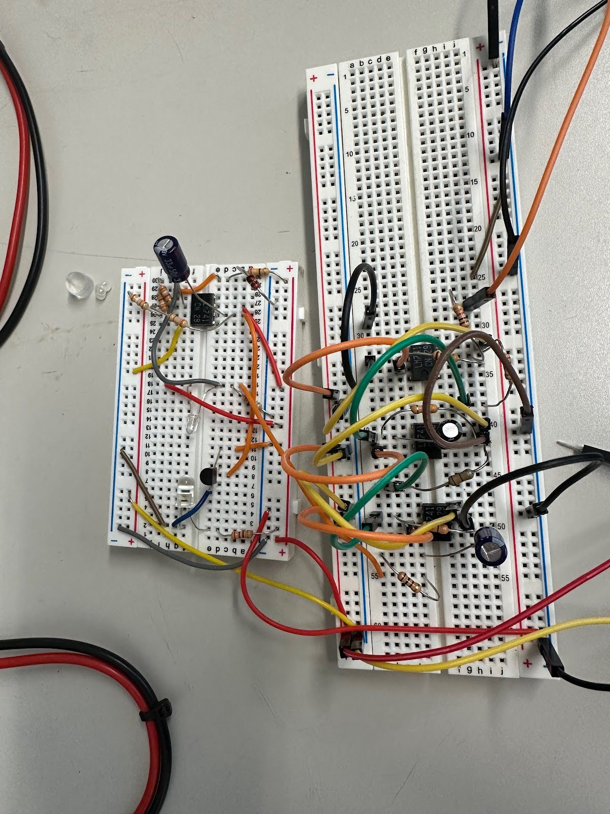

In my analog electronics course, I was tasked with designing and wiring a rudimentary pulse oximeter. The output of our device can be measured on an oscilloscope and is a function of the amount of light that passes through a finger. On a high level, an infrared LED points towards a phototransistor, and the amount of light that passes through the finger is measured by the phototransistor, amplified by a bandpass filter, and shifted by a voltage follower to ensure that the output is within a five volt range. There is also a reference voltage used to ensure that the phototransistor's output is more consistent.
The final circuit is shown below. The smaller breadboard on top is where the phototransistor and infrared LED are located, as well as the voltage follower. The larger breadboard on the bottom contains the bandpass filter and the reference voltage, which utiliz multiple op-amps to both limit the frequencies that can pass through the circuit and amplify the signal.
Bandpass Filter: The bandpass filter, depicted on top right, consists of three stages. The first stage is a high pass filter, which uses a capacitor at the input to block DC signals. And, due to the choice of resistor and capacitor values, the cutoff frequency is set to 0.5 Hz. The second stage is a low pass filter, which uses a capacitor in parallel with the feebdack resistor to limit high frequency signals. The cutoff frequency is set to 4 Hz using the same method as the high pass filter. The final stage is the voltage follower, which uses a non-inverting op-amp along with another power source to ensure that the output is within a 5 volt range.
Sensor: The sensor, depicted in the top left, consists of an infrared LED and a phototransistor. The infrared LED emits light, which passes through a finger and is detected by the phototransistor. The amount of voltage across the phototransistor is dependent on the amount of light that passes through the finger, which itself is dependent on the amount of oxygen in the blood of the finger. The brightness of the LED is controlled partially by the reference voltage, which itself attenuates high frequency noise that could interefere with readings.
Feedback Reference Voltage: The feedback reference voltage, depicted on the bottom, consists of a zener diode and a low pass filter. The zener diode is used to limit the input of the positive terminal of the op-amp to 5 volts. The low pass filter is used to filter out any high frequency noise that may be present in the output of the phototransistor, and adjust the amount of light coming out of the infrared LED accordingly.
Multiple LTSpice simpulations were run to ensure that the circuit was functioning before physically wiring it. Overall, the circuit functioned as expected, and taught me a lot about the importance of testing before implementation and thorough design practices.